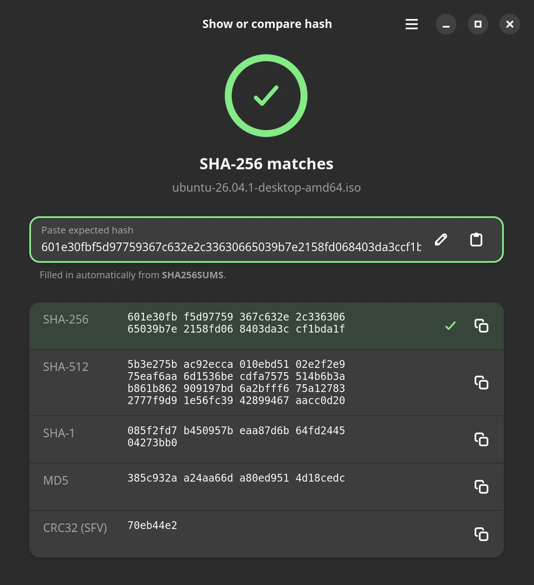
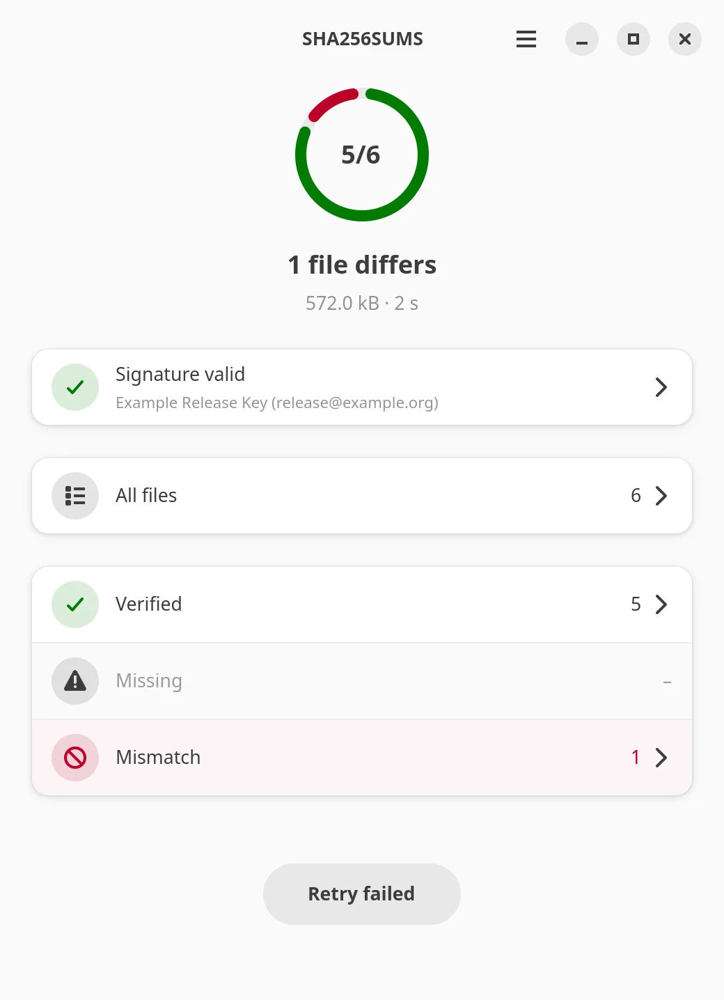
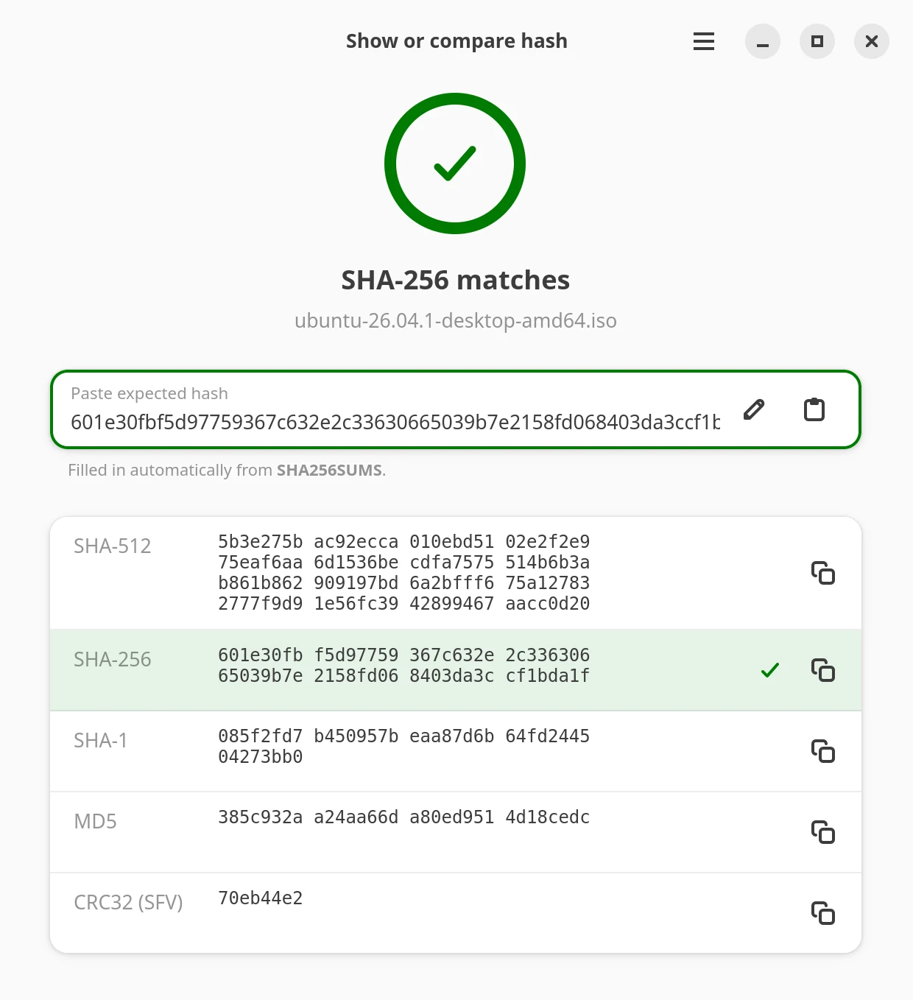
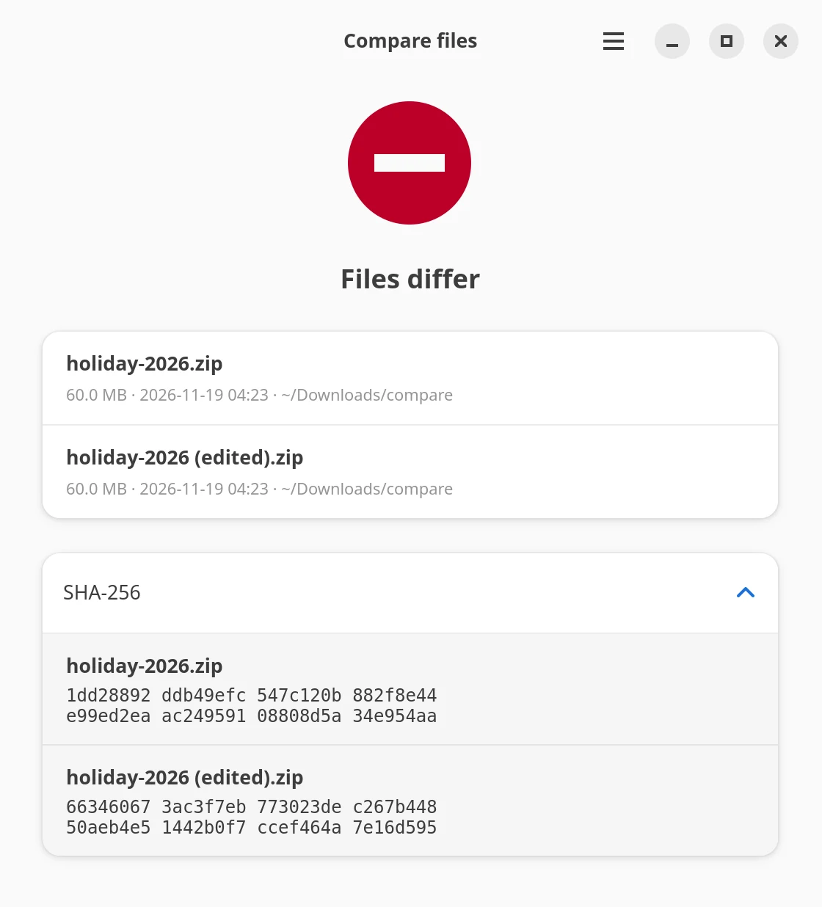
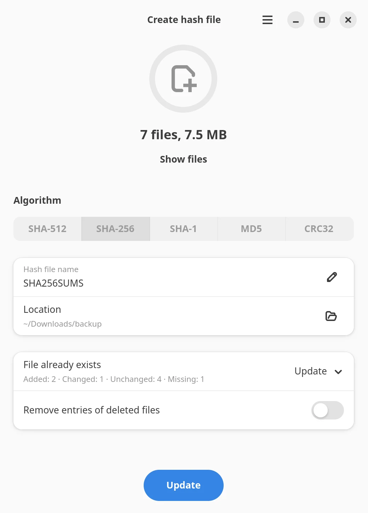
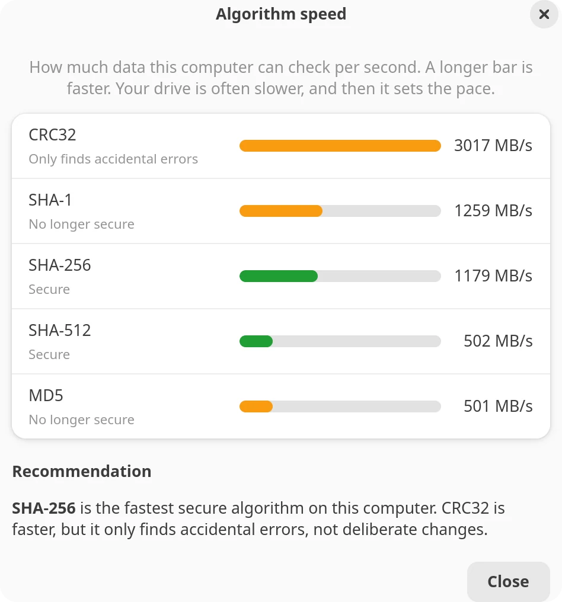

HashTally
Create and verify checksums.
Right from the context menu of GNOME Files. Signed hash files included.


Know that a file is what it claims to be.
A checksum tells you whether a file arrived unchanged. HashTally creates, checks and compares them, right from the right-click menu.
Create
Right-click files or folders, then Scripts › HashTally: Create hash file. The file is named after your selection.
Verify
Double-click a .sha256, .md5 or SHA256SUMS file. The verdict comes first, problems are grouped by kind.
Compare
Show the hashes of one file, paste the expected one and see at once whether it matches.
Everything about a checksum, in one place.
Small, native and out of your way until you need it.
✔Verify
Checks every file a hash file lists. Files that are fine stay folded away, problems are on top.
＋Create
SHA-256, SHA-512, SHA-1, MD5 or CRC32 for files and folders, written as name.sha256 or SHA256SUMS.
⇄Compare
Paste a hash, or a whole line from a hash file. You see at once whether it matches. Select two files to see whether they are identical.
↻Update
Adding to a hash file that exists hashes only the new and changed files, not everything again.
⊕Spots strays
Optionally counts the files in a list's folders that the list does not name, so nothing slips in unnoticed.
⏱Speed test
Shows which algorithm is fastest on your computer and recommends the fastest secure one.
✎GPG signatures
Also checks the signature of a hash file, the usual way Linux downloads are published. The result sits right below the verdict.
#Many formats
GNU, BSD, SFV and files with only a digest. SHA-224/384 and BLAKE2b can be verified as well.
⛨Your keyring stays yours
HashTally changes it only when you press “Import key” and confirm.
›_Command line too
hashtally --create ~/Downloads/*.iso, with text output and clear exit codes for scripts.
◐Native look
GTK 4 and libadwaita, light and dark, in ten languages.
⎋Closes fast
Ctrl+W or Esc closes any HashTally window.
Looks like it belongs.
Follows your system theme, light or dark.





One line, no root.
Installs for the current user only. Running it again from a newer release updates.
- Needs a GNOME-family desktop with Nautilus and GNOME 46 or newer: Ubuntu 24.04+, Fedora 40+, Debian 13+, Linux Mint 22+. Nemo and Caja get the same Scripts entries.
gpgis optional, for signature checks. - Then double-click a hash file, or right-click files › Scripts › HashTally: Create hash file
- Signed. Releases carry a GPG signature; the fingerprint is
E7AA EB31 A4DE CF99 B314 7E1D FAAB 30B5 FD49 0E93
- How to verify the download